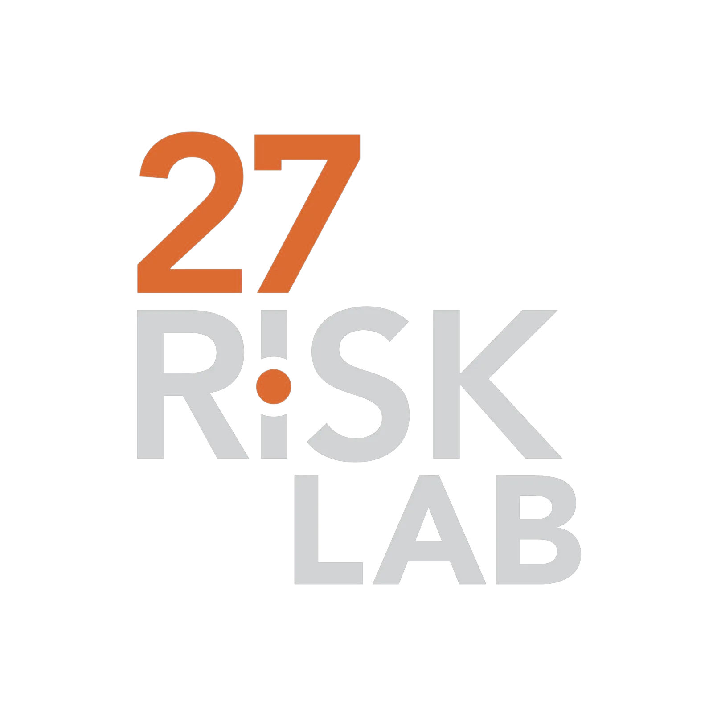

Una IA que cierra el ciclo E2E del riesgo: vigila el entorno con KPIs, anticipa la desviación y ejecuta el protocolo. En alianza con 27 Risk Lab.
El dolor
Producto que no sale, clientes que no reciben, y una reputación construida durante años puesta a prueba en horas. Y cuando pasa, nadie recuerda dónde está el plan.
¿Quién activa el comité y a quién llama primero?
¿Cuál fue nuestra respuesta la última vez que paró la operación?
¿Qué proveedores críticos no tienen plan B?
¿Qué decisiones de crisis quedaron sin documentar?
El producto en acción
Monitoreamos noticias y redes en los frentes que pueden parar tu operación (elecciones, paros, medios, clima) y disparamos el protocolo cuando una señal escala.
Qué incluye
El plan no se queda en el cajón: se prueba, se mantiene vivo y tu equipo sabe activarlo.

Antes del demo
¿Esto es solo un documento?
No. El documento es el punto de partida. Diseñamos el comité, lo implementamos, lo probamos y lo dejamos listo para usar. Si no se prueba, no sirve el día de la crisis.
¿Qué pasa el día de una crisis real?
El comité ya está definido: quién decide, quién comunica y a quién se llama primero. Además contamos con acompañamiento en eventos reales, para que no estés solo en el momento que más importa.
¿Sirve si ya tengo un plan?
Sí. Revisamos lo que ya tienes, lo conectamos con la operación real y lo volvemos accionable. Muchos planes existen en papel pero nadie sabe activarlos. Eso es lo que resolvemos.
¿Cuánto toma implementarlo?
Cerca de 90 días, con un alcance acordado y entregables tangibles: el comité diseñado, el plan listo y las pruebas realizadas.
Pide tu demo
Te mostramos cómo se vería tu comité y tu protocolo activándose, con un caso de tu operación. Una demo corta y directa con Juan Manuel, sin formularios ni embudos.